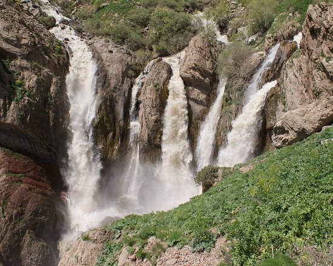
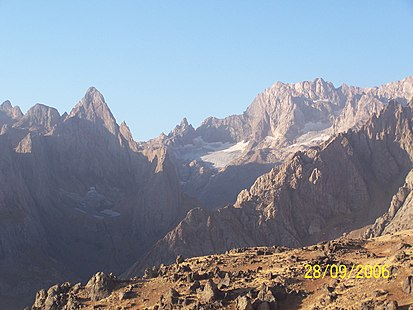
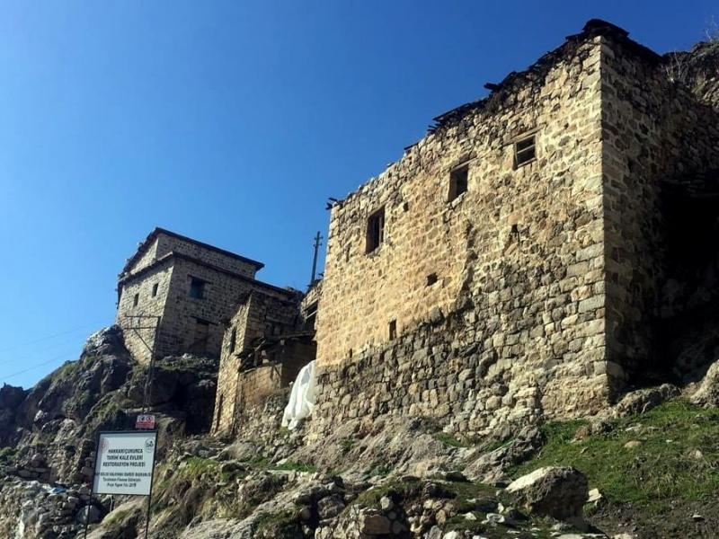
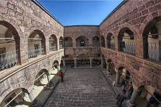

 HAKKARİ (AA) - Hakkari'nin Çukurca ilçesindeki "Beyaz Su Şelalesi", güzelliğiyle ziyaretçileri hayran bırakıyor. Çukurca-Hakkari kara yolunun 10'uncu kilometresindeki Sabır Dağı'nda kayalıklardan çıkan kaynak suyunun oluşturduğu Beyaz Su Şelalesi, ziyaretçilerin ilgisini çekiyor.
 Cilo (Buzul) Dağı Türkiye’nin 2. en yüksek dağıdır. Zirvesi dört mevsim boyunca erimeyen kar ve buz örtüsü ile kaplı tektonik bir dağ olan Cilo Dağı Güneydoğu Toroslar’ın en doğu uzantısını oluşturur. Türkiye’nin güneydoğu ucunda, Hakkâri ilinin sınırları içerisinde yer almaktadır.
 Çukurca kent merkezine hakim bir tepede bulunan Çukurca Kalesi ve evlerinin yapılışının üzerinden yüz yıllar geçmesine rağmen heybetini hala koruyor.
 Meydan Medresesi, Hakkâri merkez Biçer Mahallesi'nde bulunmaktadır. Kale Altı Mezarlığı’nın doğu tarafındaki düz bir platforma kurulmuştur. Yapı, Anadolu'da Selçuklu döneminde başlayıp, Beylikler ve Osmanlı döneminde gelişen avlulu medrese plan tipinin 18. yüzyıl başlarındaki bir örneğidir. Bölgede yer alan Bitlis, Hoşap ve Pizan'daki medreselerle plan ve mimari özellikleri bakımından benzerlikler göstermektedir.